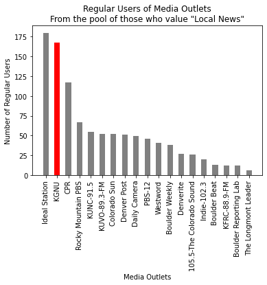
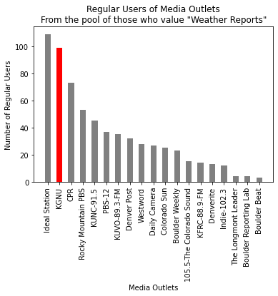
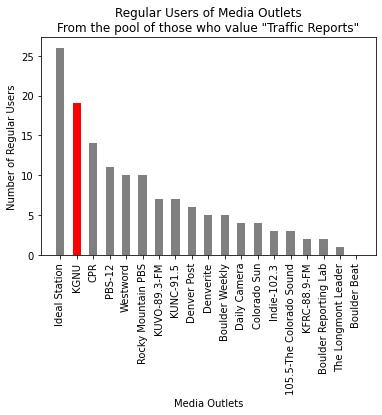
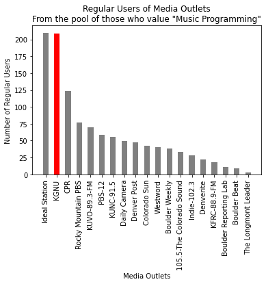
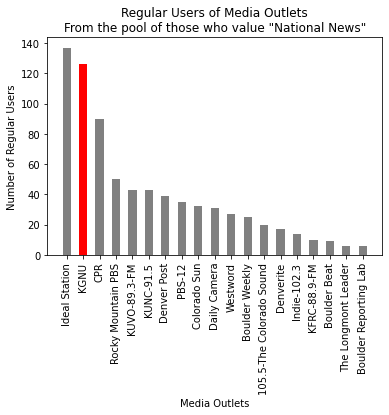
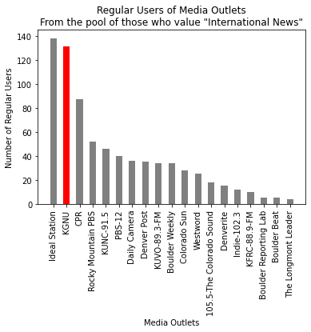
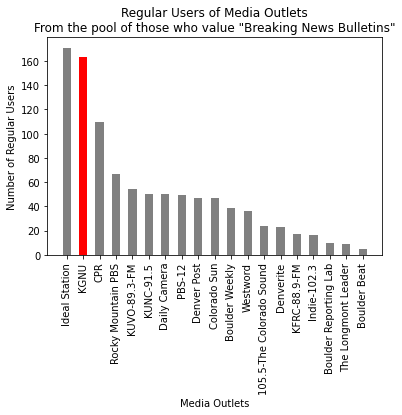
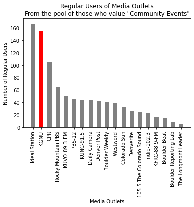
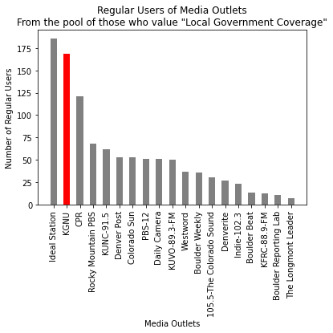
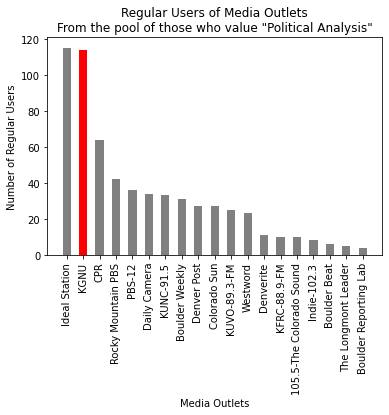

Importance Preferences
Contents
Importance Preferences¶
In this section we look for correlations between what respondents consider ‘Important’ categories of programming and examine which Media Outlets they use on a regular basis to obtain such programming.
Local News¶

Cohort is defined those who rated "Local News" at least a 9 in Importance.
Cohort Size: 240
Within this Cohort, % "Regular User" Statistics:
Ideal Station: 75.0%
KGNU: 70.0%
CPR: 48.8%
Rocky Mountain PBS: 27.9%
KUNC-91.5: 22.9%
KUVO-89.3-FM: 21.7%
Colorado Sun: 21.7%
Denver Post: 21.2%
Daily Camera: 20.4%
PBS-12: 19.2%
Westword: 17.1%
Boulder Weekly: 15.8%
Denverite: 11.2%
105.5-The Colorado Sound: 10.8%
Indie-102.3: 8.3%
Boulder Beat: 5.4%
KFRC-88.9-FM: 5.0%
Boulder Reporting Lab: 5.0%
The Longmont Leader: 2.5%
Weather Reports¶

Cohort is defined those who rated "Weather Reports" at least a 9 in Importance.
Cohort Size: 164
Within this Cohort, % "Regular User" Statistics:
Ideal Station: 66.5%
KGNU: 60.4%
CPR: 44.5%
Rocky Mountain PBS: 32.3%
KUNC-91.5: 27.4%
PBS-12: 22.6%
KUVO-89.3-FM: 21.3%
Denver Post: 19.5%
Westword: 17.1%
Daily Camera: 16.5%
Colorado Sun: 15.2%
Boulder Weekly: 14.0%
105.5-The Colorado Sound: 9.1%
KFRC-88.9-FM: 8.5%
Denverite: 7.9%
Indie-102.3: 7.3%
The Longmont Leader: 2.4%
Boulder Reporting Lab: 2.4%
Boulder Beat: 1.8%
Traffic Reports¶

Cohort is defined those who rated "Traffic Reports" at least a 9 in Importance.
Cohort Size: 41
Within this Cohort, % "Regular User" Statistics:
Ideal Station: 63.4%
KGNU: 46.3%
CPR: 34.1%
PBS-12: 26.8%
Westword: 24.4%
Rocky Mountain PBS: 24.4%
KUVO-89.3-FM: 17.1%
KUNC-91.5: 17.1%
Denver Post: 14.6%
Denverite: 12.2%
Boulder Weekly: 12.2%
Daily Camera: 9.8%
Colorado Sun: 9.8%
Indie-102.3: 7.3%
105.5-The Colorado Sound: 7.3%
KFRC-88.9-FM: 4.9%
Boulder Reporting Lab: 4.9%
The Longmont Leader: 2.4%
Boulder Beat: 0.0%
Music Programming¶

Cohort is defined those who rated "Music Programming" at least a 9 in Importance.
Cohort Size: 286
Within this Cohort, % "Regular User" Statistics:
Ideal Station: 73.4%
KGNU: 73.1%
CPR: 43.4%
Rocky Mountain PBS: 26.9%
KUVO-89.3-FM: 24.5%
PBS-12: 20.6%
KUNC-91.5: 19.6%
Daily Camera: 17.1%
Denver Post: 16.4%
Colorado Sun: 14.7%
Westword: 14.0%
Boulder Weekly: 13.3%
105.5-The Colorado Sound: 11.5%
Indie-102.3: 9.8%
Denverite: 7.7%
KFRC-88.9-FM: 6.3%
Boulder Reporting Lab: 3.8%
Boulder Beat: 3.1%
The Longmont Leader: 1.0%
National News¶

Cohort is defined those who rated "National News" at least a 9 in Importance.
Cohort Size: 185
Within this Cohort, % "Regular User" Statistics:
Ideal Station: 74.1%
KGNU: 68.1%
CPR: 48.6%
Rocky Mountain PBS: 27.0%
KUVO-89.3-FM: 23.2%
KUNC-91.5: 23.2%
Denver Post: 21.1%
PBS-12: 18.9%
Colorado Sun: 17.3%
Daily Camera: 16.8%
Westword: 14.6%
Boulder Weekly: 13.5%
105.5-The Colorado Sound: 10.8%
Denverite: 9.2%
Indie-102.3: 7.6%
KFRC-88.9-FM: 5.4%
Boulder Beat: 4.9%
The Longmont Leader: 3.2%
Boulder Reporting Lab: 3.2%
International News¶

Cohort is defined those who rated "International News" at least a 9 in Importance.
Cohort Size: 184
Within this Cohort, % "Regular User" Statistics:
Ideal Station: 75.0%
KGNU: 71.2%
CPR: 47.3%
Rocky Mountain PBS: 28.3%
KUNC-91.5: 25.0%
PBS-12: 21.7%
Daily Camera: 19.6%
Denver Post: 19.0%
KUVO-89.3-FM: 18.5%
Boulder Weekly: 18.5%
Colorado Sun: 15.2%
Westword: 13.6%
105.5-The Colorado Sound: 9.8%
Denverite: 8.2%
Indie-102.3: 6.5%
KFRC-88.9-FM: 5.4%
Boulder Reporting Lab: 2.7%
Boulder Beat: 2.7%
The Longmont Leader: 2.2%
Breaking News Bulletins¶

Cohort is defined those who rated "Breaking News Bulletins" at least a 9 in Importance.
Cohort Size: 238
Within this Cohort, % "Regular User" Statistics:
Ideal Station: 71.8%
KGNU: 68.5%
CPR: 46.2%
Rocky Mountain PBS: 28.2%
KUVO-89.3-FM: 22.7%
KUNC-91.5: 21.0%
Daily Camera: 21.0%
PBS-12: 20.6%
Denver Post: 19.7%
Colorado Sun: 19.7%
Boulder Weekly: 16.4%
Westword: 15.1%
105.5-The Colorado Sound: 10.1%
Denverite: 9.7%
KFRC-88.9-FM: 7.1%
Indie-102.3: 6.7%
Boulder Reporting Lab: 4.2%
The Longmont Leader: 3.8%
Boulder Beat: 2.1%
Community Events¶

Cohort is defined those who rated "Community Events" at least a 9 in Importance.
Cohort Size: 216
Within this Cohort, % "Regular User" Statistics:
Ideal Station: 77.3%
KGNU: 71.8%
CPR: 48.6%
Rocky Mountain PBS: 29.6%
KUVO-89.3-FM: 23.1%
PBS-12: 20.8%
KUNC-91.5: 20.4%
Daily Camera: 20.4%
Denver Post: 19.4%
Boulder Weekly: 19.0%
Westword: 18.1%
Colorado Sun: 15.3%
Denverite: 12.0%
105.5-The Colorado Sound: 11.6%
Indie-102.3: 10.6%
KFRC-88.9-FM: 7.9%
Boulder Beat: 6.5%
Boulder Reporting Lab: 4.2%
The Longmont Leader: 2.3%
Local Government Coverage¶

Cohort is defined those who rated "Local Government Coverage" at least a 9 in Importance.
Cohort Size: 249
Within this Cohort, % "Regular User" Statistics:
Ideal Station: 74.7%
KGNU: 67.9%
CPR: 48.6%
Rocky Mountain PBS: 27.3%
KUNC-91.5: 24.9%
Denver Post: 21.3%
Colorado Sun: 21.3%
PBS-12: 20.5%
Daily Camera: 20.5%
KUVO-89.3-FM: 20.1%
Westword: 14.9%
Boulder Weekly: 14.5%
105.5-The Colorado Sound: 12.0%
Denverite: 10.8%
Indie-102.3: 9.2%
Boulder Beat: 5.2%
KFRC-88.9-FM: 4.8%
Boulder Reporting Lab: 4.4%
The Longmont Leader: 2.8%
Political Analysis¶

Cohort is defined those who rated "Political Analysis" at least a 9 in Importance.
Cohort Size: 152
Within this Cohort, % "Regular User" Statistics:
Ideal Station: 75.7%
KGNU: 75.0%
CPR: 42.1%
Rocky Mountain PBS: 27.6%
PBS-12: 23.7%
Daily Camera: 22.4%
KUNC-91.5: 21.7%
Boulder Weekly: 20.4%
Denver Post: 17.8%
Colorado Sun: 17.8%
KUVO-89.3-FM: 16.4%
Westword: 15.1%
Denverite: 7.2%
KFRC-88.9-FM: 6.6%
105.5-The Colorado Sound: 6.6%
Indie-102.3: 5.3%
Boulder Beat: 3.9%
The Longmont Leader: 3.3%
Boulder Reporting Lab: 2.6%
Local Public Affairs¶

Cohort is defined those who rated "Local Public Affairs" at least a 9 in Importance.
Cohort Size: 211
Within this Cohort, % "Regular User" Statistics:
Ideal Station: 76.8%
KGNU: 71.1%
CPR: 47.9%
Rocky Mountain PBS: 29.9%
KUNC-91.5: 23.2%
Daily Camera: 21.8%
KUVO-89.3-FM: 21.3%
Denver Post: 21.3%
PBS-12: 20.4%
Colorado Sun: 20.4%
Boulder Weekly: 18.0%
Westword: 15.2%
105.5-The Colorado Sound: 10.9%
Denverite: 10.4%
Indie-102.3: 10.0%
KFRC-88.9-FM: 5.7%
Boulder Beat: 5.2%
The Longmont Leader: 3.8%
Boulder Reporting Lab: 3.3%